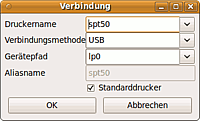

Epson Stylus Photo P50
Archivierte Anleitung
Dieser Artikel wurde archiviert, da er - oder Teile daraus - nur noch unter einer älteren Ubuntu-Version nutzbar ist. Diese Anleitung wird vom Wiki-Team weder auf Richtigkeit überprüft noch anderweitig gepflegt. Zusätzlich wurde der Artikel für weitere Änderungen gesperrt.
Anmerkung: Inzwischen existieren vereinfachte Installationsmöglichkeiten mit einem LSB-kompatiblen Treiber (avasys.jp  ), sowie der automatischen Installation ab Ubuntu 11.04 Natty Narwhal. Theoretisch sollten beide Varianten den CD/DVD-Druck unter Ubuntu ermöglichen.
), sowie der automatischen Installation ab Ubuntu 11.04 Natty Narwhal. Theoretisch sollten beide Varianten den CD/DVD-Druck unter Ubuntu ermöglichen.
Zum Verständnis dieses Artikels sind folgende Seiten hilfreich:
Dieser Artikel beschreibt die Installation des Epson Stylus Photo P50 mit dem Herstellertreiber für Ubuntu 10.04 Lucid. Ab Ubuntu 11.04 Natty Narwhal wird der Drucker automatisch erkannt und eingerichtet.
Unter GNU/Linux ist dabei das Bedrucken von CDs und DVDs mit diesem Druckertreiber nicht möglich.
Da der Treiber auch für die Modelle Artisan 50, Epson Stylus Photo T50, Epson Stylus Photo T59 und Epson Stylus Photo T60 ausgelegt ist, können die Schritte zur Installation und Konfiguration für diese Drucker übernommen werden.
Installation¶
Hinweis:
Ab Ubuntu 11.04 Natty Narwhal wird nach dem Anschluss des Druckers der benötigte Treiber heruntergeladen, installiert und der Drucker eingerichtet (siehe
News-Beitrag auf avasys.jp). Daher bezieht sich dieser Artikel nur auf Vorgängerversionen von Ubuntu.
Auf der Avasys-Homepage kann die Installationsdatei für den Drucker heruntergeladen werden. Dafür muss unter "Form for Download" der erste Punkt angewählt werden. Weiter unten muss man noch weitere Angaben wie die verwendete Ubuntu-Version machen. Danach erscheint die Downloadseite. Hier muss nun der Ubuntutreiber ausgewählt werden, der sich ganz unten auf der Seite befindet. Der Debiantreiber verursacht einige Probleme.
Hinweis!
Fremdsoftware kann das System gefährden.
Hinweis:
Der Drucker darf während der gesamten Installation nicht angeschlossen sein.
Nun muss das Archiv entpackt [1] werden. Danach wechselt man im Terminal [2] in das entsprechende Verzeichnis und installiert den Treiber mittels
sudo ./pips-spt50-ubuntu8.04-3.8.0-CG.install

Während der Installation wird das grafische ekpd-tool des Epson-Treibers gestartet, mit dem die Verbindung zum Drucker konfiguriert werden kann.
Die Angaben können alle so übernommen werden.
Danach wird die Installation mit ⏎ im Terminal beendet.
Konfiguration¶
Für die Konfiguration wird der Drucker angeschlossen und eingeschaltet. Anschließend kann er über die Weboberfläche von CUPS eingerichtet werden.
Unter "Drucker und Klassen hinzufügen –> Drucker hinzufügen" muss der Eintrag "Epson Stylus Photo P50 (Epson Stylus Photo P50)" gewählt werden.
Im nächsten Schritt wird dann ein Ort eintragen (z.B. Desktop). Danach muss manuell eine PPD ausgewählt werden. Diese findet sich unter /usr/local/EPAva/printer/spt50/ekspt50.ppd.
Nun werden noch die Standardeinstellungen für den Epson Stylus angegeben.
Natürlich kann der Drucker auch über "System –> Systemeinstellungen –> Drucken" eingerichtet werden.
Status Monitor¶
Mittels des Befehls
ekpstm
kann man den Tintenfüllstand des Epson Stylus überprüfen.
Deinstallation¶
Zum Entfernen des Treibers muss im Terminal einfach das mitgelieferte Skript ausgeführt werden:
cd /usr/local/EPAva/printer/spt50 sudo ./uninstall-spt50.sh
Problemlösung¶
Nicht angeschlossen¶
Die Fehlermeldung "Nicht angeschlossen?" erscheint, wenn der Status-Monitor noch offen ist und man gleichzeitig versucht zu drucken. Um drucken zu können, muss dieser lediglich geschlossen werden.
Genauso wenig kann der Status-Monitor aufgerufen werden, wenn gerade gedruckt wird.
Fehlermeldung der Paketverwaltung¶
Erscheint beim Einspielen eines Updates oder der Installation eines Programms die folgende Fehlermeldung unter Synaptic
E: pips-spt50: Unterprozess installiertes post-installation-Skript gab den Fehlerwert 1 zurück
oder bei der Benutzung von apt-get oder aptitude
Fehler traten auf beim Bearbeiten von: pips-spt50 E: Sub-process /usr/bin/dpkg returned an error code (1)
so hat man möglicherweise den Debian-Treiber installiert. Dieser wird folgendermaßen deinstalliert:
cd /usr/local/EPAva/printer/spt50 sudo ./uninstall-spt50.sh sudo apt-get remove pips-debian4.0
Danach muss nur noch der Ubuntutreiber heruntergeladen und installiert werden. Dabei wird das verbleibende Paket pips-spt50 Version 3.7.0-2 durch die aktuellere Version des Ubuntutreibers ersetzt.
- Erstellt mit Inyoka
-
 2004 – 2017 ubuntuusers.de • Einige Rechte vorbehalten
2004 – 2017 ubuntuusers.de • Einige Rechte vorbehalten
Lizenz • Kontakt • Datenschutz • Impressum • Serverstatus -
Serverhousing gespendet von